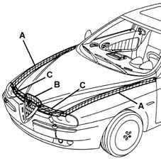

7025A Location of bonnet wind noise
- Path
- Test > 70 FITTINGS > 7025 COMPARTMENT LIDS > 7025A Location of bonnet wind noise
- Kind
- test / check procedure
- Applies to
- engines: 1.6 TS , 1.8 TS, 2.5 V6, 1.9 JTD 8v , 2.4 JTD 10v; all production periods
- Interactive page
- https://sloeber94.github.io/elrnDB-a156/en/#/3239189
Applies to: engines: 1.6 TS , 1.8 TS, 2.5 V6, 1.9 JTD 8v , 2.4 JTD 10v; all production periods
Tape the various areas shown in the diagram with masking tape.

Road test the vehicle letting it gradually reach the speed where the noise appears: if the noise persists, check that the plugs are present and that the rubber mountings for the cables are correctly fitted in the flame-proof partition.
Remove the masking tape from zone A and repeat the road test: if the noise persists, check the buffers between the bonnet lid and the wings.
Also check the condition of the wind seals and that they are correctly fitted (see Op. 7025A62 bonnet lid anti-wind noise seal - r+r ).
Remove the masking tape from zone C and repeat the road test: if the noise persists, check the condition of the front sound-proofing seal and that it is correctly fitted (it must adhere perfectly to the crossmember when the bonnet is closed) (see Op. 7025A62 bonnet lid anti-wind noise seal - r+r ).